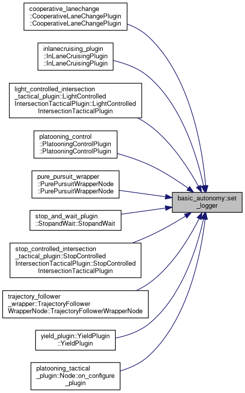

- Generated on Sat Sep 5 2026 18:24:00 for Carma-platform by
 1.9.4
1.9.4
|
Carma-platform v4.11.0
CARMA Platform is built on robot operating system (ROS) and utilizes open source software (OSS) that enables Cooperative Driving Automation (CDA) features to allow Automated Driving Systems to interact and cooperate with infrastructure and other vehicles through communication.
|
Namespaces | |
| namespace | anonymous_namespace{log.cpp} |
| namespace | log |
| namespace | smoothing |
| namespace | waypoint_generation |
Functions | |
| rclcpp::Logger | get_logger () |
| Return the module-level logger used by all basic_autonomy functions. More... | |
| void | set_logger (rclcpp::Logger logger) |
| Replace the module-level logger used by all basic_autonomy functions. More... | |
| rclcpp::Logger basic_autonomy::get_logger | ( | ) |
Return the module-level logger used by all basic_autonomy functions.
By default this is a standalone logger named "basic_autonomy" which routes to stdout only. Call set_logger() once from your node at startup to route all basic_autonomy log output through rosout so it is recorded in MCAP:
basic_autonomy::set_logger(get_logger().get_child("basic_autonomy"));
Definition at line 32 of file log.cpp.
References basic_autonomy::anonymous_namespace{log.cpp}::module_logger().
Referenced by cooperative_lanechange::CooperativeLaneChangePlugin::CooperativeLaneChangePlugin(), arbitrator::FixedPriorityCostFunction::FixedPriorityCostFunction(), platooning_tactical_plugin::Node::Node(), platooning_control::PlatooningControlPlugin::PlatooningControlPlugin(), platooning_strategic_ihp::PlatooningManager::PlatooningManager(), platooning_strategic_ihp::PlatooningStrategicIHPPlugin::PlatooningStrategicIHPPlugin(), subsystem_controllers::PluginManager::PluginManager(), pure_pursuit_wrapper::PurePursuitWrapperNode::PurePursuitWrapperNode(), stop_controlled_intersection_tactical_plugin::StopControlledIntersectionTacticalPlugin::StopControlledIntersectionTacticalPlugin(), trajectory_follower_wrapper::TrajectoryFollowerWrapperNode::TrajectoryFollowerWrapperNode(), trajectory_follower_wrapper::TrajectoryFollowerWrapperNode::ackermann_control_cb(), subsystem_controllers::PluginManager::activate(), basic_autonomy::waypoint_generation::add_lanefollow_buffer(), subsystem_controllers::PluginManager::add_plugin(), carma_wm_ctrl::GeofenceScheduler::addGeofence(), carma_wm_ctrl::WMBroadcaster::addGeofence(), carma_wm_ctrl::WMBroadcaster::addRegulatoryComponent(), carma_wm_ctrl::WMBroadcaster::addScheduleFromMsg(), route_following_plugin::RouteFollowingPlugin::addStopAndWaitAtRouteEnd(), approaching_emergency_vehicle_plugin::ApproachingEmergencyVehiclePlugin::addStopAndWaitToEndOfPlan(), lanelet::MapConformer::anonymous_namespace{MapConformer.cpp}::addValidSpeedLimit(), platooning_strategic_ihp::PlatooningManager::allPredecessorFollowing(), basic_autonomy::waypoint_generation::apply_speed_limits(), light_controlled_intersection_tactical_plugin::LightControlledIntersectionTacticalPlugin::applyTrajectorySmoothingAlgorithm(), carma_cooperative_perception::HostVehicleFilterNode::attempt_filter_and_republish(), trajectory_follower_wrapper::TrajectoryFollowerWrapperNode::autoware_info_timer_callback(), carma_wm_ctrl::WMBroadcaster::baseMapCallback(), lci_strategic_plugin::LCIStrategicPlugin::boundary_accel_nocruise_maxspeed_decel(), approaching_emergency_vehicle_plugin::ApproachingEmergencyVehiclePlugin::broadcastWarningToErv(), basic_autonomy::waypoint_generation::build_chain_centerline(), route_following_plugin::RouteFollowingPlugin::bumper_pose_cb(), platooning_control::PIDController::calculate(), intersection_transit_maneuvering::Servicer::call(), mobilitypath_visualizer::MobilityPathVisualizer::callbackMobilityPath(), trajectory_visualizer::TrajectoryVisualizer::callbackPlanTrajectory(), port_drayage_plugin::PortDrayagePlugin::callSetActiveRouteClient(), lci_strategic_plugin::LCIStrategicPlugin::canArriveAtGreenWithCertainty(), sci_strategic_plugin::SCIStrategicPlugin::caseOneSpeedProfile(), sci_strategic_plugin::SCIStrategicPlugin::caseThreeSpeedProfile(), sci_strategic_plugin::SCIStrategicPlugin::caseTwoSpeedProfile(), platooning_strategic_ihp::PlatooningManager::changeFromFollowerToLeader(), platooning_strategic_ihp::PlatooningManager::changeFromLeaderToFollower(), carma_wm_ctrl::WMBroadcaster::checkActiveGeofenceLogic(), approaching_emergency_vehicle_plugin::ApproachingEmergencyVehiclePlugin::checkForErvTimeout(), subsystem_controllers::PluginManager::cleanup(), carma_cloud_client::CarmaCloudClient::CloudSend(), carma_wm_ctrl::WMBroadcaster::combineParticipantsToVehicle(), platooning_control::PlatooningControlPlugin::compose_ctrl_cmd(), basic_autonomy::waypoint_generation::compose_lanechange_trajectory_from_path(), basic_autonomy::waypoint_generation::compose_lanefollow_trajectory_from_path(), stop_controlled_intersection_tactical_plugin::StopControlledIntersectionTacticalPlugin::compose_trajectory_from_centerline(), stop_and_wait_plugin::StopandWait::compose_trajectory_from_centerline(), lci_strategic_plugin::LCIStrategicPlugin::composeIntersectionTransitMessage(), sci_strategic_plugin::SCIStrategicPlugin::composeIntersectionTransitMessage(), platooning_strategic_ihp::PlatooningStrategicIHPPlugin::composeLaneChangeManeuverMessage(), route_following_plugin::RouteFollowingPlugin::composeLaneChangeManeuverMessage(), approaching_emergency_vehicle_plugin::ApproachingEmergencyVehiclePlugin::composeLaneChangeManeuverMessage(), route_following_plugin::RouteFollowingPlugin::composeLaneFollowingManeuverMessage(), approaching_emergency_vehicle_plugin::ApproachingEmergencyVehiclePlugin::composeLaneFollowingManeuverMessage(), stop_and_dwell_strategic_plugin::StopAndDwellStrategicPlugin::composeLaneFollowingManeuverMessage(), sci_strategic_plugin::SCIStrategicPlugin::composeLaneFollowingManeuverMessage(), platooning_strategic_ihp::PlatooningStrategicIHPPlugin::composeManeuverMessage(), platooning_strategic_ihp::PlatooningStrategicIHPPlugin::composeMobilityOperationINFO(), platooning_strategic_ihp::PlatooningStrategicIHPPlugin::composeMobilityOperationLeader(), platooning_strategic_ihp::PlatooningStrategicIHPPlugin::composeMobilityOperationLeadWithOperation(), platooning_strategic_ihp::PlatooningStrategicIHPPlugin::composeMobilityOperationSTATUS(), plan_delegator::PlanDelegator::composePlanTrajectoryRequest(), platooning_strategic_ihp::PlatooningStrategicIHPPlugin::composePlatoonInfoMsg(), motion_computation::conversion::impl::composePredictedState(), sci_strategic_plugin::SCIStrategicPlugin::composeStopAndWaitManeuverMessage(), stop_and_dwell_strategic_plugin::StopAndDwellStrategicPlugin::composeStopAndWaitManeuverMessage(), lci_strategic_plugin::LCIStrategicPlugin::composeStopAndWaitManeuverMessage(), route_following_plugin::RouteFollowingPlugin::composeStopAndWaitManeuverMessage(), approaching_emergency_vehicle_plugin::ApproachingEmergencyVehiclePlugin::composeStopAndWaitManeuverMessage(), carma_wm_ctrl::WMBroadcaster::composeTCRStatus(), lci_strategic_plugin::LCIStrategicPlugin::composeTrajectorySmoothingManeuverMessage(), mobilitypath_visualizer::MobilityPathVisualizer::composeVisualizationMarker(), basic_autonomy::waypoint_generation::compute_fit(), arbitrator::CostSystemCostFunction::compute_total_cost(), localization_manager::LocalizationManager::computeNDTFreq(), subsystem_controllers::PluginManager::configure(), basic_autonomy::waypoint_generation::constrain_to_time_boundary(), carma_wm_ctrl::WMBroadcaster::controlRequestFromRoute(), trajectory_follower_wrapper::TrajectoryFollowerWrapperNode::convert_cmd(), pure_pursuit_wrapper::PurePursuitWrapperNode::convert_cmd(), carma_cooperative_perception::convert_covariances(), intersection_transit_maneuvering::IntersectionTransitManeuveringNode::convert_maneuver_plan(), trajectory_follower_wrapper::TrajectoryFollowerWrapperNode::convert_state(), carma_wm::SignalizedIntersectionManager::convertLaneToLaneletId(), stop_controlled_intersection_tactical_plugin::StopControlledIntersectionTacticalPlugin::create_case_one_speed_profile(), stop_controlled_intersection_tactical_plugin::StopControlledIntersectionTacticalPlugin::create_case_three_speed_profile(), stop_controlled_intersection_tactical_plugin::StopControlledIntersectionTacticalPlugin::create_case_two_speed_profile(), basic_autonomy::waypoint_generation::create_geometry_profile(), basic_autonomy::waypoint_generation::create_lanefollow_geometry(), cooperative_lanechange::CooperativeLaneChangePlugin::create_mobility_request(), light_controlled_intersection_tactical_plugin::LightControlledIntersectionTacticalPlugin::createGeometryProfile(), carma_wm::SignalizedIntersectionManager::createIntersectionFromMapMsg(), carma_wm_ctrl::WMBroadcaster::createWorkzoneGeofence(), carma_wm_ctrl::WMBroadcaster::createWorkzoneGeometry(), subsystem_controllers::DriversControllerNode::critical_drivers_check_callback(), carma_guidance_plugins::ControlPlugin::current_pose_callback(), carma_guidance_plugins::ControlPlugin::current_trajectory_callback(), platooning_control::PlatooningControlPlugin::current_trajectory_callback(), carma_guidance_plugins::ControlPlugin::current_twist_callback(), carma_wm_ctrl::WMBroadcaster::currentLocationCallback(), sci_strategic_plugin::SCIStrategicPlugin::currentPoseCb(), stop_and_dwell_strategic_plugin::StopAndDwellStrategicPlugin::currentPoseCb(), subsystem_controllers::PluginManager::deactivate(), sci_strategic_plugin::SCIStrategicPlugin::determine_speed_profile_case(), platooning_strategic_ihp::PlatooningManager::determineDynamicLeaderBasedOnViolation(), carma_wm_ctrl::GeofenceScheduler::endGeofenceCallback(), lanelet::MapConformer::ensureCompliance(), carma_cooperative_perception::MultipleObjectTrackerNode::execute_pipeline(), object_visualizer::Node::external_objects_callback(), carma_wm_ctrl::WMBroadcaster::externalMapMsgCallback(), carma_wm::SignalizedIntersectionManager::extract_signal_states_from_movement_state(), lci_strategic_plugin::LCIStrategicPlugin::extractInitialState(), sci_strategic_plugin::SCIStrategicPlugin::extractInitialState(), stop_and_dwell_strategic_plugin::StopAndDwellStrategicPlugin::extractInitialState(), basic_autonomy::waypoint_generation::extrapolate_to_length(), approaching_emergency_vehicle_plugin::ApproachingEmergencyVehiclePlugin::filter_points_ahead(), cooperative_lanechange::CooperativeLaneChangePlugin::find_current_gap(), platooning_strategic_ihp::PlatooningStrategicIHPPlugin::findLaneWidth(), platooning_strategic_ihp::PlatooningStrategicIHPPlugin::findSpeedLimit(), carma_wm::fromBinMsg(), platooning_control::PlatooningControlPlugin::generate_command(), pure_pursuit_wrapper::PurePursuitWrapperNode::generate_command(), trajectory_follower_wrapper::TrajectoryFollowerWrapperNode::generate_command(), platooning_control::PlatooningControlPlugin::generate_control_signals(), yield_plugin::YieldPlugin::generate_JMT_trajectory(), arbitrator::TreePlanner::generate_plan(), platooning_control::PlatooningControlWorker::generate_speed(), approaching_emergency_vehicle_plugin::ApproachingEmergencyVehiclePlugin::generateErvRoute(), approaching_emergency_vehicle_plugin::ApproachingEmergencyVehiclePlugin::generateMoveOverManeuverPlan(), approaching_emergency_vehicle_plugin::ApproachingEmergencyVehiclePlugin::generateReducedSpeedLaneFollowingeManeuverPlan(), carma_wm_ctrl::WMBroadcaster::geofenceCallback(), carma_wm_ctrl::WMBroadcaster::geofenceFromMapMsg(), carma_wm_ctrl::WMBroadcaster::geofenceFromMsg(), yield_plugin::YieldPlugin::get_collision(), yield_plugin::YieldPlugin::get_collision_time(), yield_plugin::YieldPlugin::get_collision_times_concurrently_cpu(), yield_plugin::YieldPlugin::get_collision_times_concurrently_cuda(), subsystem_controllers::PluginManager::get_control_plugins_by_capability(), yield_plugin::YieldPlugin::get_earliest_collision_object_and_time(), lci_strategic_plugin::LCIStrategicPlugin::get_earliest_entry_time(), lci_strategic_plugin::LCIStrategicPlugin::get_eet_or_tbd(), lci_strategic_plugin::LCIStrategicPlugin::get_final_entry_time_and_conditions(), basic_autonomy::waypoint_generation::get_lanechange_points_from_maneuver(), carma_cooperative_perception::MultipleObjectTrackerNode::get_logger(), basic_autonomy::waypoint_generation::get_nearest_index_by_downtrack(), basic_autonomy::waypoint_generation::get_nearest_point_index(), subsystem_controllers::BaseSubsystemController::get_nodes_in_namespace(), motion_computation::conversion::impl::get_psm_timestamp(), yield_plugin::get_smallest_time_step_of_traj(), subsystem_controllers::PluginManager::get_strategic_plugins_by_capability(), subsystem_controllers::PluginManager::get_tactical_plugins_by_capability(), lci_strategic_plugin::LCIStrategicPlugin::get_trajectory_smoothing_activation_distance(), platooning_control::PlatooningControlPlugin::get_trajectory_speed(), lci_strategic_plugin::LCIStrategicPlugin::get_ts_case(), carma_wm::query::getAffectedLaneletOrAreas(), lanelet::MapConformer::anonymous_namespace{MapConformer.cpp}::getAllGermanTrafficRules(), carma_wm::CARMAWorldModel::getBusStopsAlongRoute(), platooning_strategic_ihp::PlatooningManager::getClosestIndex(), platooning_strategic_ihp::PlatooningManager::getDynamicLeader(), approaching_emergency_vehicle_plugin::ApproachingEmergencyVehiclePlugin::getErvInformationFromBsm(), platooning_strategic_ihp::PlatooningManager::getHostPlatoonSize(), carma_wm::CARMAWorldModel::getIntersectionsAlongRoute(), plan_delegator::PlanDelegator::getLaneChangeInformation(), approaching_emergency_vehicle_plugin::ApproachingEmergencyVehiclePlugin::getLaneletOnEgoRouteFromMapPosition(), route_following_plugin::RouteFollowingPlugin::getManeuverDuration(), approaching_emergency_vehicle_plugin::ApproachingEmergencyVehiclePlugin::getManeuverDuration(), sci_strategic_plugin::anonymous_namespace{sci_strategic_plugin.cpp}::getManeuverEndSpeed(), stop_and_dwell_strategic_plugin::anonymous_namespace{stop_and_dwell_strategic_plugin.cpp}::getManeuverEndSpeed(), bsm_generator::BSMGeneratorWorker::getMsgId(), carma_wm_ctrl::GeofenceSchedule::getNextInterval(), plan_delegator::PlanDelegator::getPlannerClientByName(), carma_wm_ctrl::WMBroadcaster::getPointsInLocalFrame(), approaching_emergency_vehicle_plugin::ApproachingEmergencyVehiclePlugin::getRouteIntersectingLanelet(), approaching_emergency_vehicle_plugin::ApproachingEmergencyVehiclePlugin::getSecondsUntilPassing(), carma_wm::CARMAWorldModel::getSignalizedIntersectionsAlongRoute(), carma_wm::CARMAWorldModel::getSignalsAlongRoute(), sci_strategic_plugin::SCIStrategicPlugin::getTurnDirectionAtIntersection(), localization_manager::LocalizationManager::gnssPoseCallback(), platooning_strategic_ihp::PlatooningStrategicIHPPlugin::handle_mob_req(), arbitrator::ArbitratorNode::handle_on_activate(), subsystem_controllers::GuidanceControllerNode::handle_on_activate(), carma_cooperative_perception::HostVehicleFilterNode::handle_on_activate(), carma_cooperative_perception::MultipleObjectTrackerNode::handle_on_activate(), subsystem_controllers::BaseSubsystemController::handle_on_activate(), subsystem_controllers::DriversControllerNode::handle_on_activate(), subsystem_controllers::GuidanceControllerNode::handle_on_cleanup(), carma_cooperative_perception::ExternalObjectListToSdsmNode::handle_on_cleanup(), carma_cooperative_perception::HostVehicleFilterNode::handle_on_cleanup(), carma_cooperative_perception::MultipleObjectTrackerNode::handle_on_cleanup(), subsystem_controllers::BaseSubsystemController::handle_on_cleanup(), arbitrator::ArbitratorNode::handle_on_configure(), bsm_generator::BSMGenerator::handle_on_configure(), carma_wm_ctrl::WMBroadcasterNode::handle_on_configure(), frame_transformer::Node::handle_on_configure(), gnss_to_map_convertor::Node::handle_on_configure(), lightbar_manager::LightBarManager::handle_on_configure(), localization_manager::Node::handle_on_configure(), mobilitypath_publisher::MobilityPathPublication::handle_on_configure(), mobilitypath_visualizer::MobilityPathVisualizer::handle_on_configure(), motion_computation::MotionComputationNode::handle_on_configure(), plan_delegator::PlanDelegator::handle_on_configure(), points_map_filter::Node::handle_on_configure(), route::Route::handle_on_configure(), subsystem_controllers::GuidanceControllerNode::handle_on_configure(), trajectory_executor::TrajectoryExecutor::handle_on_configure(), carma_cooperative_perception::ExternalObjectListToDetectionListNode::handle_on_configure(), carma_cooperative_perception::ExternalObjectListToSdsmNode::handle_on_configure(), carma_cooperative_perception::HostVehicleFilterNode::handle_on_configure(), carma_cooperative_perception::MultipleObjectTrackerNode::handle_on_configure(), carma_cooperative_perception::SdsmToDetectionListNode::handle_on_configure(), carma_cooperative_perception::TrackListToExternalObjectListNode::handle_on_configure(), roadway_objects::RoadwayObjectsNode::handle_on_configure(), carma_cloud_client::CarmaCloudClient::handle_on_configure(), guidance::GuidanceWorker::handle_on_configure(), port_drayage_plugin::PortDrayagePlugin::handle_on_configure(), subsystem_controllers::BaseSubsystemController::handle_on_configure(), subsystem_controllers::DriversControllerNode::handle_on_configure(), subsystem_controllers::LocalizationControllerNode::handle_on_configure(), subsystem_controllers::GuidanceControllerNode::handle_on_deactivate(), carma_cooperative_perception::HostVehicleFilterNode::handle_on_deactivate(), carma_cooperative_perception::MultipleObjectTrackerNode::handle_on_deactivate(), subsystem_controllers::BaseSubsystemController::handle_on_deactivate(), subsystem_controllers::BaseSubsystemController::handle_on_error(), subsystem_controllers::GuidanceControllerNode::handle_on_shutdown(), carma_cooperative_perception::ExternalObjectListToSdsmNode::handle_on_shutdown(), carma_cooperative_perception::HostVehicleFilterNode::handle_on_shutdown(), carma_cooperative_perception::MultipleObjectTrackerNode::handle_on_shutdown(), subsystem_controllers::BaseSubsystemController::handle_on_shutdown(), lci_strategic_plugin::LCIStrategicPlugin::handleCruisingUntilStop(), lci_strategic_plugin::LCIStrategicPlugin::handleFailureCase(), lci_strategic_plugin::LCIStrategicPlugin::handleFailureCaseHelper(), lci_strategic_plugin::LCIStrategicPlugin::handleGreenSignalScenario(), lightbar_manager::LightBarManagerStateMachine::handleStateChange(), lci_strategic_plugin::LCIStrategicPlugin::handleStopping(), lightbar_manager::LightBarManagerWorker::hasHigherPriority(), platooning_strategic_ihp::PlatooningManager::hostMemberUpdates(), approaching_emergency_vehicle_plugin::ApproachingEmergencyVehiclePlugin::incomingBsmCallback(), approaching_emergency_vehicle_plugin::ApproachingEmergencyVehiclePlugin::incomingEmergencyVehicleAckCallback(), system_controller::SystemControllerNode::initialize(), platooning_strategic_ihp::PlatooningStrategicIHPPlugin::is_lanechange_possible(), subsystem_controllers::SSCDriverManager::is_ssc_driver_operational(), platooning_strategic_ihp::PlatooningStrategicIHPPlugin::isJoiningVehicleNearPlatoon(), plan_delegator::PlanDelegator::isManeuverExpired(), platooning_strategic_ihp::PlatooningStrategicIHPPlugin::isVehicleNearTargetPlatoon(), platooning_strategic_ihp::PlatooningStrategicIHPPlugin::isVehicleRightBehind(), platooning_strategic_ihp::PlatooningStrategicIHPPlugin::isVehicleRightInFront(), approaching_emergency_vehicle_plugin::ApproachingEmergencyVehicleTransitionTable::logDebugEvent(), light_controlled_intersection_tactical_plugin::LightControlledIntersectionTacticalPlugin::logDebugInfoAboutPreviousTrajectory(), localization_manager::LocalizationTransitionTable::logDebugSignal(), lci_strategic_plugin::LCIStrategicStateTransitionTable::logDebugSignal(), carma_wm::SignalizedIntersectionManager::logInfoOnce(), carma_wm::SignalizedIntersectionManager::logWarnOnce(), lci_strategic_plugin::LCIStrategicPlugin::lookupFrontBumperTransform(), plan_delegator::PlanDelegator::lookupFrontBumperTransform(), object::ObjectDetectionTrackingNode::lookupTransform(), plan_delegator::PlanDelegator::maneuverPlanCallback(), stop_controlled_intersection_tactical_plugin::StopControlledIntersectionTacticalPlugin::maneuvers_to_points(), points_map_filter::Node::map_callback(), MapUpdateLogger::mapUpdateCallback(), platooning_strategic_ihp::PlatooningStrategicIHPPlugin::mob_op_cb(), platooning_strategic_ihp::PlatooningStrategicIHPPlugin::mob_op_cb_candidatefollower(), platooning_strategic_ihp::PlatooningStrategicIHPPlugin::mob_op_cb_candidateleader(), platooning_strategic_ihp::PlatooningStrategicIHPPlugin::mob_op_cb_follower(), platooning_strategic_ihp::PlatooningStrategicIHPPlugin::mob_op_cb_leader(), platooning_strategic_ihp::PlatooningStrategicIHPPlugin::mob_op_cb_leaderaborting(), platooning_strategic_ihp::PlatooningStrategicIHPPlugin::mob_op_cb_leaderwaiting(), platooning_strategic_ihp::PlatooningStrategicIHPPlugin::mob_op_cb_leadwithoperation(), platooning_strategic_ihp::PlatooningStrategicIHPPlugin::mob_op_cb_preparetojoin(), platooning_strategic_ihp::PlatooningStrategicIHPPlugin::mob_op_cb_standby(), platooning_strategic_ihp::PlatooningStrategicIHPPlugin::mob_op_cb_STATUS(), platooning_strategic_ihp::PlatooningStrategicIHPPlugin::mob_req_cb(), platooning_strategic_ihp::PlatooningStrategicIHPPlugin::mob_req_cb_candidatefollower(), platooning_strategic_ihp::PlatooningStrategicIHPPlugin::mob_req_cb_candidateleader(), platooning_strategic_ihp::PlatooningStrategicIHPPlugin::mob_req_cb_follower(), platooning_strategic_ihp::PlatooningStrategicIHPPlugin::mob_req_cb_leader(), platooning_strategic_ihp::PlatooningStrategicIHPPlugin::mob_req_cb_leaderaborting(), platooning_strategic_ihp::PlatooningStrategicIHPPlugin::mob_req_cb_leaderwaiting(), platooning_strategic_ihp::PlatooningStrategicIHPPlugin::mob_req_cb_leadwithoperation(), platooning_strategic_ihp::PlatooningStrategicIHPPlugin::mob_req_cb_preparetojoin(), platooning_strategic_ihp::PlatooningStrategicIHPPlugin::mob_req_cb_standby(), platooning_strategic_ihp::PlatooningStrategicIHPPlugin::mob_resp_cb(), platooning_strategic_ihp::PlatooningStrategicIHPPlugin::mob_resp_cb_candidatefollower(), platooning_strategic_ihp::PlatooningStrategicIHPPlugin::mob_resp_cb_candidateleader(), platooning_strategic_ihp::PlatooningStrategicIHPPlugin::mob_resp_cb_follower(), platooning_strategic_ihp::PlatooningStrategicIHPPlugin::mob_resp_cb_leader(), platooning_strategic_ihp::PlatooningStrategicIHPPlugin::mob_resp_cb_leaderaborting(), platooning_strategic_ihp::PlatooningStrategicIHPPlugin::mob_resp_cb_leaderwaiting(), platooning_strategic_ihp::PlatooningStrategicIHPPlugin::mob_resp_cb_leadwithoperation(), platooning_strategic_ihp::PlatooningStrategicIHPPlugin::mob_resp_cb_preparetojoin(), platooning_strategic_ihp::PlatooningStrategicIHPPlugin::mob_resp_cb_standby(), mobilitypath_publisher::MobilityPathPublication::mobility_path_message_generator(), lci_strategic_plugin::LCIStrategicPlugin::mobilityOperationCb(), sci_strategic_plugin::SCIStrategicPlugin::mobilityOperationCb(), cooperative_lanechange::CooperativeLaneChangePlugin::mobilityresponse_cb(), basic_autonomy::anonymous_namespace{log.cpp}::module_logger(), platooning_strategic_ihp::PlatooningManager::neighborMemberUpdates(), approaching_emergency_vehicle_plugin::ApproachingEmergencyVehiclePlugin::on_configure_plugin(), cooperative_lanechange::CooperativeLaneChangePlugin::on_configure_plugin(), inlanecruising_plugin::InLaneCruisingPluginNode::on_configure_plugin(), lci_strategic_plugin::LCIStrategicPlugin::on_configure_plugin(), platooning_tactical_plugin::Node::on_configure_plugin(), route_following_plugin::RouteFollowingPlugin::on_configure_plugin(), sci_strategic_plugin::SCIStrategicPlugin::on_configure_plugin(), stop_and_dwell_strategic_plugin::StopAndDwellStrategicPlugin::on_configure_plugin(), stop_and_wait_plugin::StopandWaitNode::on_configure_plugin(), yield_plugin::YieldPluginNode::on_configure_plugin(), intersection_transit_maneuvering::IntersectionTransitManeuveringNode::on_configure_plugin(), light_controlled_intersection_tactical_plugin::LightControlledIntersectionTransitPluginNode::on_configure_plugin(), platooning_control::PlatooningControlPlugin::on_configure_plugin(), pure_pursuit_wrapper::PurePursuitWrapperNode::on_configure_plugin(), stop_controlled_intersection_tactical_plugin::StopControlledIntersectionTacticalPlugin::on_configure_plugin(), trajectory_follower_wrapper::TrajectoryFollowerWrapperNode::on_configure_plugin(), system_controller::SystemControllerNode::on_error(), subsystem_controllers::BaseSubsystemController::on_system_alert(), subsystem_controllers::LocalizationControllerNode::on_system_alert(), system_controller::SystemControllerNode::on_system_alert(), trajectory_executor::TrajectoryExecutor::onNewTrajectoryPlan(), platooning_strategic_ihp::PlatooningStrategicIHPPlugin::onSpin(), trajectory_executor::TrajectoryExecutor::onTrajEmitTick(), plan_delegator::PlanDelegator::onTrajPlanTick(), port_drayage_plugin::OperationID::operationToString(), MapUpdateLogger::pairToDebugMessage(), lci_strategic_plugin::LCIStrategicPlugin::parameter_update_callback(), lci_strategic_plugin::LCIStrategicPlugin::parseStrategyParams(), sci_strategic_plugin::SCIStrategicPlugin::parseStrategyParams(), cooperative_lanechange::CooperativeLaneChangePlugin::plan_lanechange(), platooning_strategic_ihp::PlatooningStrategicIHPPlugin::plan_maneuver_cb(), lci_strategic_plugin::LCIStrategicPlugin::plan_maneuvers_callback(), route_following_plugin::RouteFollowingPlugin::plan_maneuvers_callback(), sci_strategic_plugin::SCIStrategicPlugin::plan_maneuvers_callback(), stop_and_dwell_strategic_plugin::StopAndDwellStrategicPlugin::plan_maneuvers_callback(), approaching_emergency_vehicle_plugin::ApproachingEmergencyVehiclePlugin::plan_maneuvers_callback(), inlanecruising_plugin::InLaneCruisingPlugin::plan_trajectory_callback(), yield_plugin::YieldPlugin::plan_trajectory_callback(), cooperative_lanechange::CooperativeLaneChangePlugin::plan_trajectory_callback(), intersection_transit_maneuvering::IntersectionTransitManeuveringNode::plan_trajectory_callback(), stop_controlled_intersection_tactical_plugin::StopControlledIntersectionTacticalPlugin::plan_trajectory_callback(), platooning_tactical_plugin::PlatooningTacticalPlugin::plan_trajectory_cb(), stop_and_wait_plugin::StopandWait::plan_trajectory_cb(), plan_delegator::PlanDelegator::planTrajectory(), light_controlled_intersection_tactical_plugin::LightControlledIntersectionTacticalPlugin::planTrajectoryCB(), light_controlled_intersection_tactical_plugin::LightControlledIntersectionTacticalPlugin::planTrajectorySmoothing(), lci_strategic_plugin::LCIStrategicPlugin::planWhenAPPROACHING(), lci_strategic_plugin::LCIStrategicPlugin::planWhenUNAVAILABLE(), lci_strategic_plugin::LCIStrategicPlugin::planWhenWAITING(), platooning_control::PlatooningControlPlugin::platoon_info_cb(), arbitrator::ArbitratorNode::plugin_priorities_map_from_json(), carma_wm::CARMAWorldModel::pointFromRouteTrackPos(), motion_computation::conversion::impl::pose_from_gnss(), localization_manager::Node::poseAndStatsCallback(), localization_manager::LocalizationManager::poseAndStatsCallback(), bsm_generator::BSMGenerator::poseCallback(), localization_manager::LocalizationManager::posePubTick(), carma_wm_ctrl::WMBroadcaster::preprocessWorkzoneGeometry(), lci_strategic_plugin::LCIStrategicPlugin::print_boundary_distances(), lci_strategic_plugin::LCIStrategicPlugin::print_params(), basic_autonomy::log::printDebugPerLine(), basic_autonomy::log::printDoublesPerLineWithPrefix(), basic_autonomy::waypoint_generation::process_trajectory_plan(), carma_wm::SignalizedIntersectionManager::processSpatFromMsg(), lightbar_manager::LightBarManager::processTurnSignal(), carma_cooperative_perception::ExternalObjectListToDetectionListNode::publish_as_detection_list(), carma_cooperative_perception::ExternalObjectListToSdsmNode::publish_as_sdsm(), roadway_objects::RoadwayObjectsNode::publish_obstacles(), mock_controller_driver::MockControllerDriver::publish_robot_status_callback(), carma_wm_ctrl::WMBroadcaster::publishLightId(), trajectory_executor::TrajectoryExecutor::queryControlPlugins(), points_map_filter::Node::recompute_lookup_grid(), lightbar_manager::LightBarManagerWorker::releaseControl(), pure_pursuit_wrapper::PurePursuitWrapperNode::remove_repeated_timestamps(), carma_wm_ctrl::WMBroadcaster::removeGeofence(), lightbar_manager::LightBarManagerWorker::requestControl(), basic_autonomy::waypoint_generation::resample_linestring_pair_to_same_size(), route_following_plugin::RouteFollowingPlugin::returnToShortestPath(), object_visualizer::Node::roadway_obstacles_callback(), approaching_emergency_vehicle_plugin::ApproachingEmergencyVehiclePlugin::routeCallback(), route_following_plugin::RouteFollowingPlugin::routeCb(), platooning_strategic_ihp::PlatooningStrategicIHPPlugin::run_candidate_follower(), platooning_strategic_ihp::PlatooningStrategicIHPPlugin::run_candidate_leader(), platooning_strategic_ihp::PlatooningStrategicIHPPlugin::run_follower(), platooning_strategic_ihp::PlatooningStrategicIHPPlugin::run_lead_with_operation(), platooning_strategic_ihp::PlatooningStrategicIHPPlugin::run_leader(), platooning_strategic_ihp::PlatooningStrategicIHPPlugin::run_leader_aborting(), platooning_strategic_ihp::PlatooningStrategicIHPPlugin::run_leader_waiting(), platooning_strategic_ihp::PlatooningStrategicIHPPlugin::run_prepare_to_join(), carma_wm::CARMAWorldModel::sampleRoutePoints(), carma_wm_ctrl::WMBroadcaster::scheduleGeofence(), carma_cooperative_perception::SdsmToDetectionListNode::sdsm_msg_callback(), subsystem_controllers::LocalizationControllerNode::sensor_fault_map_from_json(), approaching_emergency_vehicle_plugin::ApproachingEmergencyVehicleTransitionTable::setAndLogState(), localization_manager::LocalizationTransitionTable::setAndLogState(), lci_strategic_plugin::LCIStrategicStateTransitionTable::setAndLogState(), lightbar_manager::LightBarManager::setIndicator(), lightbar_manager::LightBarManagerWorker::setIndicatorCDAMap(), plan_delegator::anonymous_namespace{plan_delegator.cpp}::setManeuverEndingLaneletId(), plan_delegator::anonymous_namespace{plan_delegator.cpp}::setManeuverStartingLaneletId(), carma_wm::CARMAWorldModel::setMap(), carma_wm::test::setRouteByLanelets(), carma_wm::CARMAWorldModel::setRoutingGraph(), carma_wm::test::setSpeedLimit(), carma_wm_ctrl::WMBroadcaster::splitLaneletWithPoint(), carma_wm_ctrl::WMBroadcaster::splitLaneletWithRatio(), carma_wm_ctrl::WMBroadcaster::splitOppositeLaneletWithPoint(), carma_wm_ctrl::GeofenceScheduler::startGeofenceCallback(), system_controller::SystemControllerNode::startup_delay_callback(), carma_cloud_client::CarmaCloudClient::StartWebService(), localization_manager::LocalizationManager::stateTransitionCallback(), carma_cooperative_perception::MultipleObjectTrackerNode::store_new_detections(), carma_cloud_client::CarmaCloudClient::TCMHandler(), carma_cloud_client::CarmaCloudClient::tcr_callback(), carma_cooperative_perception::to_detection_list_msg(), carma_wm::toBinMsg(), cooperative_lanechange::CooperativeLaneChangePlugin::trajectory_plan_to_trajectory(), mobilitypath_publisher::MobilityPathPublication::trajectory_plan_to_trajectory(), lci_strategic_plugin::LCIStrategicPlugin::ts_case1(), lci_strategic_plugin::LCIStrategicPlugin::ts_case2(), lci_strategic_plugin::LCIStrategicPlugin::ts_case3(), lci_strategic_plugin::LCIStrategicPlugin::ts_case4(), lci_strategic_plugin::LCIStrategicPlugin::ts_case8(), lightbar_manager::LightBarManager::turnOffAll(), carma_cloud_client::CarmaCloudClient::UncompressBytes(), carma_cooperative_perception::SdsmToDetectionListNode::update_parameters(), yield_plugin::YieldPlugin::update_traj_for_object(), platooning_strategic_ihp::PlatooningStrategicIHPPlugin::updateCurrentStatus(), platooning_strategic_ihp::PlatooningManager::updateHostPose(), plan_delegator::PlanDelegator::updateManeuverParameters(), platooning_strategic_ihp::PlatooningManager::updatesOrAddMemberInfo(), carma_wm_ctrl::WMBroadcaster::updateUpcomingSGIntersectionIds(), lci_strategic_plugin::LCIStrategicPlugin::validLightState(), carma_wm::collision_detection::WorldCollisionDetection(), and carma_cloud_client::CarmaCloudClient::XMLconversion().
| void basic_autonomy::set_logger | ( | rclcpp::Logger | logger | ) |
Replace the module-level logger used by all basic_autonomy functions.
| logger | Logger to adopt — typically the calling node's get_child("basic_autonomy"). |
Definition at line 33 of file log.cpp.
References basic_autonomy::anonymous_namespace{log.cpp}::module_logger().
Referenced by cooperative_lanechange::CooperativeLaneChangePlugin::CooperativeLaneChangePlugin(), inlanecruising_plugin::InLaneCruisingPlugin::InLaneCruisingPlugin(), light_controlled_intersection_tactical_plugin::LightControlledIntersectionTacticalPlugin::LightControlledIntersectionTacticalPlugin(), platooning_control::PlatooningControlPlugin::PlatooningControlPlugin(), pure_pursuit_wrapper::PurePursuitWrapperNode::PurePursuitWrapperNode(), stop_and_wait_plugin::StopandWait::StopandWait(), stop_controlled_intersection_tactical_plugin::StopControlledIntersectionTacticalPlugin::StopControlledIntersectionTacticalPlugin(), trajectory_follower_wrapper::TrajectoryFollowerWrapperNode::TrajectoryFollowerWrapperNode(), yield_plugin::YieldPlugin::YieldPlugin(), and platooning_tactical_plugin::Node::on_configure_plugin().
